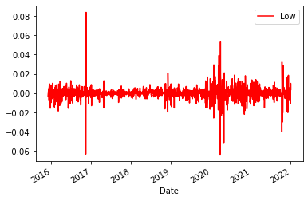
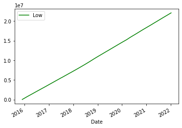

EM Indonesia¶
relationship between currency rate - inflation - stockexchange¶
an attempt to use free available data sources, and to investigate if there is any predictive aspect to this
The parameter that is lacking, is politics. (howto to quantify this?)
Currency as a parameter is examined
futures in the bond market, currency default swaps, spread …..
2022-01-05
<Response [200]>
https://sdw-wsrest.ecb.europa.eu/service/data/EXR/D.IDR.EUR.SP00.A?startPeriod=2015-12-01&endPeriod=2022-01-05
<?xml version="1.0" encoding="UTF-8"?><message:GenericData xmlns:message="http://www.sdmx.org/resources/sdmxml/schemas/v2_1/message" xmlns:common="http://www.sdmx.org/resources/sdmxml/schemas/v2_1/common" xmlns:xsi="http://www.w3.org/2001/XMLSchema-instance" xmlns:generic="http://www.sdmx.org/resources/sdmxml/schemas/v2_1/data/generic" xsi:schemaLocation="http://www.sdmx.org/resources/sdmxml/schemas/v2_1/message https://sdw-wsrest.ecb.europa.eu:443/vocabulary/sdmx/2_1/SDMXMessage.xsd http://www.sdmx.org/resources/sdmxml/schemas/v2_1/common https://sdw-wsrest.ecb.europa.eu:443/vocabulary/sdmx/2_1/SDMXCommon.xsd http://www.sdmx.org/resources/sdmxml/schemas/v2_1/data/generic https://sdw-wsrest.ecb.europa.eu:443/vocabulary/sdmx/2_1/SDMXDataGeneric.xsd">
<message:Header>
<message:ID>10b8cdd1-89b5-4cfb-9c92-a809906292e4</message:ID>
<message:Test>false</message:Test>
<message:Prepared>2022-01-07T13:32:10.385+01:00</message:Prepared>
<message:Sender id="ECB"/>
<message:Structure structureID="
Hmmm, the response is in XML. Not impossible, but also not the easiest format to work within Pandas. Fortunately, the ECB’s API lets us get the data in CSV format by specifying it in the header of the request.
<Response [200]>
'KEY,FREQ,CURRENCY,CURRENCY_DENOM,EXR_TYPE,EXR_SUFFIX,TIME_PERIOD,OBS_VALUE,OBS_STATUS,OBS_CONF,OBS_PRE_BREAK,OBS_COM,TIME_FORMAT,BREAKS,COLLECTION,COMPILING_ORG,DISS_ORG,DOM_SER_IDS,PUBL_ECB,PUBL_MU,PUBL_PUBLIC,UNIT_INDEX_BASE,COMPILATION,COVERAGE,DECIMALS,NAT_TITLE,SOURCE_AGENCY,SOURCE_PUB,TITLE,TITLE_COMPL,UNIT,UNIT_MULTrnEXR.D.IDR.EUR.SP00.A,D,IDR,EUR,SP00,A,2015-12-01,14641.99,A,,,,P1D,,A,,,,,,,,,,2,,DE2,,Indonesian rupiah/Euro,"ECB reference exchange rate, Indonesian rupiah/Euro, 2:15 pm (C.E.T.)",IDR,0rnEXR.D.IDR.EUR.SP00.A,D,IDR,EUR,SP00,A,2015-12-02,14646.1,A,,,,P1D,,A,,,,,,,,,,2,,DE2,,Indonesian rupiah/Euro,"ECB reference exchange rate, Indonesian rupiah/Euro, 2:15 pm (C.E.T.)",IDR,0rnEXR.D.IDR.EUR.SP00.A,D,IDR,EUR,SP00,A,2015-12-03,14733.44,A,,,,P1D,,A,,,,,,,,,,2,,DE2,,Indonesian rupiah/Euro,"ECB reference exchange rate, Indonesian rupiah/Euro, 2:15 pm (C.E.T.)",IDR,0rnEXR.D.IDR.EUR.SP00.A,D,IDR,EUR,SP00,A,2015-12-04,15094.88,A,,,,P1D,,A,,,,,,,,,,2,,DE2,,Indonesian rupiah/Eur'
The columns we need are ‘TIME_PERIOD’ for the dates and ‘OBS_VALUE’ for the prices. Let’s also do a sanity check on the prices in ‘OBS_VALUE’.
count 1562.000000
mean 15992.655090
std 1005.163041
min 13959.270000
25% 15147.605000
50% 16040.725000
75% 16875.982500
max 18239.610000
Name: OBS_VALUE, dtype: float64
the spike is the FX - market is 2021-12-20 where you get 20.0434 Lira for 1 Euro.
<AxesSubplot:xlabel='TIME_PERIOD'>
Indonesian Rupiah against EURO - data taken from ECB
watch the 2020 spike in exchange ratio, which I think is an outflow of capital to US/Europe
Now we import data from the Indonesian stock exchange, IDX - VanEck Vectors Indonesia Index ETF
[*******************100%*********************] 1 of 1 completed
<AxesSubplot:xlabel='Date'>
graph is IDX - VanEck Vectors Indonesia Index ETF
[*******************100%*********************] 1 of 1 completed
<AxesSubplot:xlabel='Date'>
jakarta stock exchange in Rupiah
[*******************100%*********************] 1 of 1 completed
<AxesSubplot:xlabel='Date'>
this is the indonesian rupiah against the dollar
this is the indonesian rupiah against the dollar daily change percentage
---------------------------------------------------------------------------
TypeError Traceback (most recent call last)
/tmp/ipykernel_11872/3973843293.py in <module>
9 dftcurstokfil.tail()
10 #dfcurstock.tail()
---> 11 dftcurstokfil.plot()
~/anaconda3/lib/python3.8/site-packages/pandas/plotting/_core.py in __call__(self, *args, **kwargs)
970 data.columns = label_name
971
--> 972 return plot_backend.plot(data, kind=kind, **kwargs)
973
974 __call__.__doc__ = __doc__
~/anaconda3/lib/python3.8/site-packages/pandas/plotting/_matplotlib/__init__.py in plot(data, kind, **kwargs)
69 kwargs["ax"] = getattr(ax, "left_ax", ax)
70 plot_obj = PLOT_CLASSES[kind](data, **kwargs)
---> 71 plot_obj.generate()
72 plot_obj.draw()
73 return plot_obj.result
~/anaconda3/lib/python3.8/site-packages/pandas/plotting/_matplotlib/core.py in generate(self)
284 def generate(self):
285 self._args_adjust()
--> 286 self._compute_plot_data()
287 self._setup_subplots()
288 self._make_plot()
~/anaconda3/lib/python3.8/site-packages/pandas/plotting/_matplotlib/core.py in _compute_plot_data(self)
451 # no non-numeric frames or series allowed
452 if is_empty:
--> 453 raise TypeError("no numeric data to plot")
454
455 self.data = numeric_data.apply(self._convert_to_ndarray)
TypeError: no numeric data to plot
in this graph there is a correlation between exchange rate and stock index, this begs the question if in the case of the indonesian stock exchange, we can use a significant change in currency rate as a signal to quit?
In order to get a clear idea, let’s examine the 2020 covid crisis.